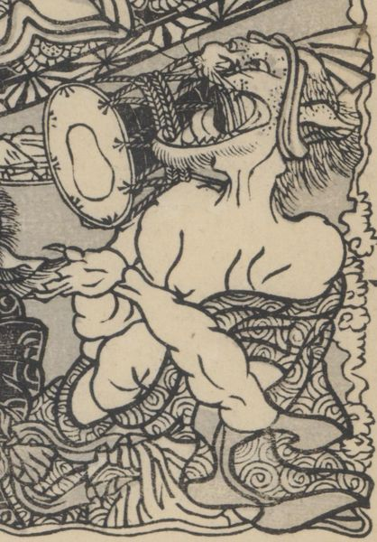

今川家不明ノ間の怪異。化物が鼓を打っている。鱗模様の着物。上半身が裸。鉢巻を巻いている。
著作者：一陽齋豊國ほか／出典：親書誌：U426_nichibunken_0444：庭訓武藏鐙／日付：2017／資源識別子：U426_nichibunken_0444_0019_0004
Copyright (c)2010- International Research Center for Japanese Studies, Kyoto, Japan. All rights reserved.